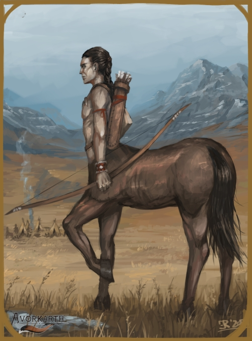

CENTAUR - HIRAN
MEDIUM HUMANOID

Creatures of great warring tribes within the plains of Karthia, centaurs are a long-standing culture of
roaming humanoids. With the torso of a human and the body of a horse, centaurs live as large
moving herds that go along with the amount of food available, renowned for their great hunts.
This leads them to often be in conflict with other cultured creatures or even other centaur tribes.
HIRAN CULTURE
While centaurs are at heart roaming hunters that live in tribes, each tribe tends to have
their own focus. Some are peaceful, some are vicious, yet all move along with the seasons
and sources of plenty. Centaur culture view symbols as divine or holy things,
painting rocks
or even themselves with blood and bone based dyes, and even their collapsable tents covered
with markings that ward from dark spirits or evil omens. Trading amongst tribes is rare, but
should a season of hardship or plenty arrive, certain hiran tribes will band together. The
more peaceful of hiran tribes will evem allow humans or other humanoids of good repute rest
upon their grounds, but this is of such rarity that it comes almost always as a surprise.
HIRAN RELIGION
Centaurs pray to a pantheon of gods, but above all that they are the chosen people of
creation. They believe themselves to have been molded from clay when the greatest god, Hraas, looked
upon his land of lesser creatures and needed a creature that was strong, swift and bold. He looked and looked at all possibilities
that lived on his earth before finding a creature that he could not tear his eyes away from.
A horse of magnificent size and beauty. This, he then copied and molded and merged with his own image.
fell in love with it. Zethriia, goddess of winds and the breath of life, wife of Hraas, grew jealous of this creature and so
cursed it to be mortal, splitting it into the many tribes of this day. Yet at heart Zethriia is kind and good,
so in pity, she grew them the great plains to own, roam and hunt.
Many of the tribes also believe fae-folk or similar tenders of nature are sp irits that should be listened
to and respected, and so also set small rock shrines to the fae's Twin Divines.
RELIGION - HRAAS AND ZETHRIIA, EARTH AND WINDS
| Status | Name | Realms |
|---|
| God | Hraas | Earth/Strength |
| Goddess | Zethriia | Winds/Grass |
| God | Rahhir | Rain/Storms |
| Goddess | Ullahi | Night/Sleep |
RELIGION - YSHAE AND SYLHAEL, THE TWIN DIVINES
| Status | Name | Realms |
|---|
| Goddess | Yshae | Healing/Rain/Moonlight |
| God | Sylhael | Strength/Growth/Sunlight |
HIRAN DIMORPHISMS
The dimorphisms of centaurs matches that of their human-like upper torso. The female
centaurs are more lithe and lean both in torso and body with more graceful and
faster movement, while the male tends towards larger, bulkier and stronger although
slower.
HIRAN STATISTICS
ADULT MALE
GENERAL ATTRIBUTES
| AGE | HEIGHT | SIZE | SIGHT |
| 17-30 | ~7'00'' | Medium - 1x2 | -/5/0 |
MOVEMENT
| RUNNING | CLIMBING | SWIMMING | FLYING |
| 9 - Perfect | 1 - Rough | 2 - Rough | - |
ABILITY SCORES (Torso/Body)
| STR | VIT | CON | AGI | DEX | INS | INT | WILL | WIS | CHA | BEA |
| 7/9 | 8 | 5 | 6/5 | 6/2 | 6 | 6 | 7 | 6 | 5 | 7 |
COMBAT ABILITY
| WOUNDS | INITIATIVE | ATTACK (MELEE) | ATTACK (RANGED) | MIGHT |
| 8 | 12 | 6/5 | 6/- | 7/9 |
| DODGE | PARRY | DAMAGE | NAT. ARMOUR | PRESENCE (POWER) | PRESENCE (BEAUTY) |
| 6 | 3 | 2/3 | 2 | 8 | 7 |
NATURAL WEAPONS
| WEAPON | TYPE | MIGHT | DAMAGE | ADDITIONAL |
| Hooves | Primary | +0 | +1 | Must use the body stats. |
ADULT FEMALE
GENERAL ATTRIBUTES
| AGE | HEIGHT | SIZE | SIGHT |
| 17-30 | ~6'08'' | Medium - 1x2 | -/5/0 |
MOVEMENT
| RUNNING | CLIMBING | SWIMMING | FLYING |
| 9 - Perfect | 1 - Rough | 2 - Rough | - |
ABILITY SCORES (Torso/Body)
| STR | VIT | CON | AGI | DEX | INS | INT | WILL | WIS | CHA | BEA |
| 6/8 | 7 | 5 | 6/6 | 6/2 | 6 | 6 | 7 | 6 | 6 | 8 |
COMBAT ABILITY
| WOUNDS | INITIATIVE | ATTACK (MELEE) | ATTACK (RANGED) | MIGHT |
| 7 | 12 | 6/5 | 6/- | 6/8 |
| DODGE | PARRY | DAMAGE | NAT. ARMOUR | PRESENCE (POWER) | PRESENCE (BEAUTY) |
| 6 | 3 | 2/2 | 2 | 7 | 7 |
NATURAL WEAPONS
| WEAPON | TYPE | MIGHT | DAMAGE | ADDITIONAL |
| Hooves | Primary | +0 | +1 | Must use the body stats. |